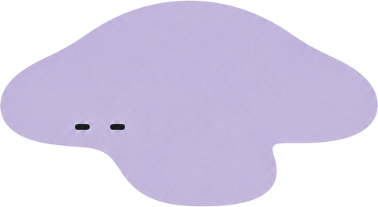
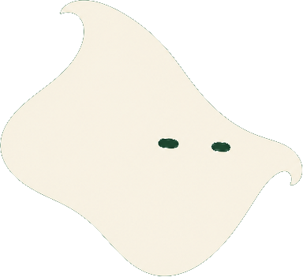
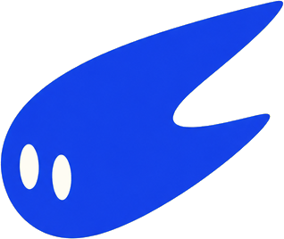
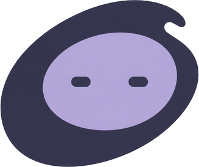

ActSpace 是一个会自我进化的 Agent 运行空间：一个协调者，一群各有专长、各有脾气的 Actor。它们在你的问题周围各占一块地盘，做事、停下来问你、把学到的留下来。




右侧名册按状态分组：等你决定、工作中、有结果、空闲。会改环境的动作先停下来。
同一个问题换个项目，Actor 的组合也跟着变。
「压测只用 staging-2」记一次就够，下次不必再说。
临时 Actor 做完活，留不留由你决定。
先弄清项目再动手。
逐个检查差异再保留。
在当前项目跑命令、构建、测试。
哪些直接做，哪些先问你。
把方法装进 Skill，带进下一个任务。
独立检索拆出去，主会话留全貌。
连自己的服务商，按任务选强度。
打开网页、点击、截图。